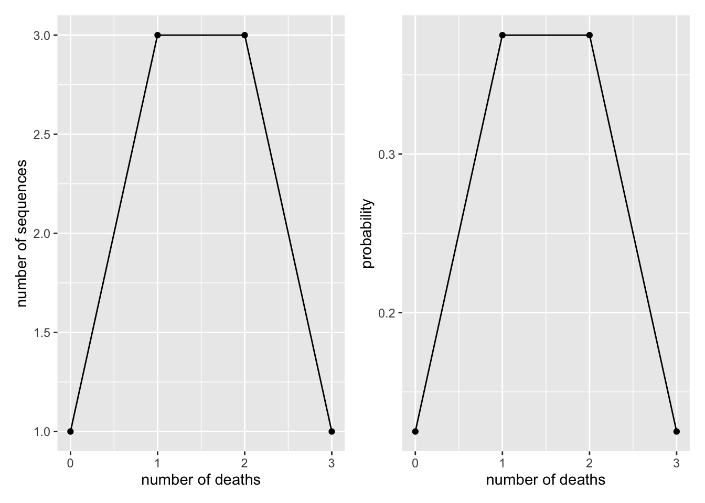
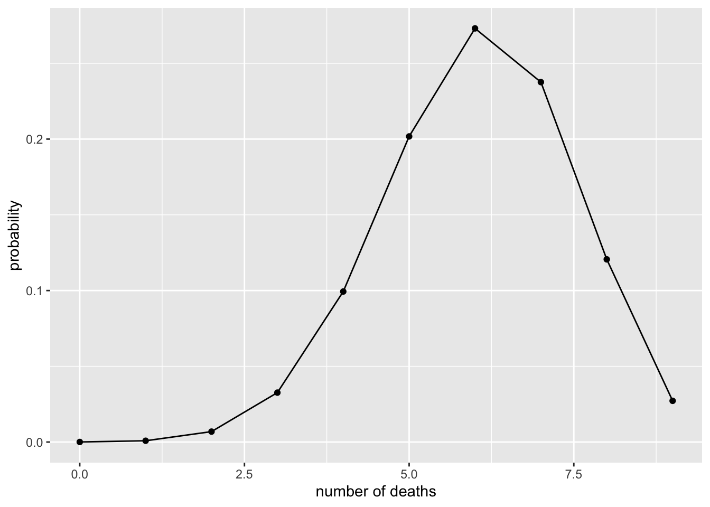
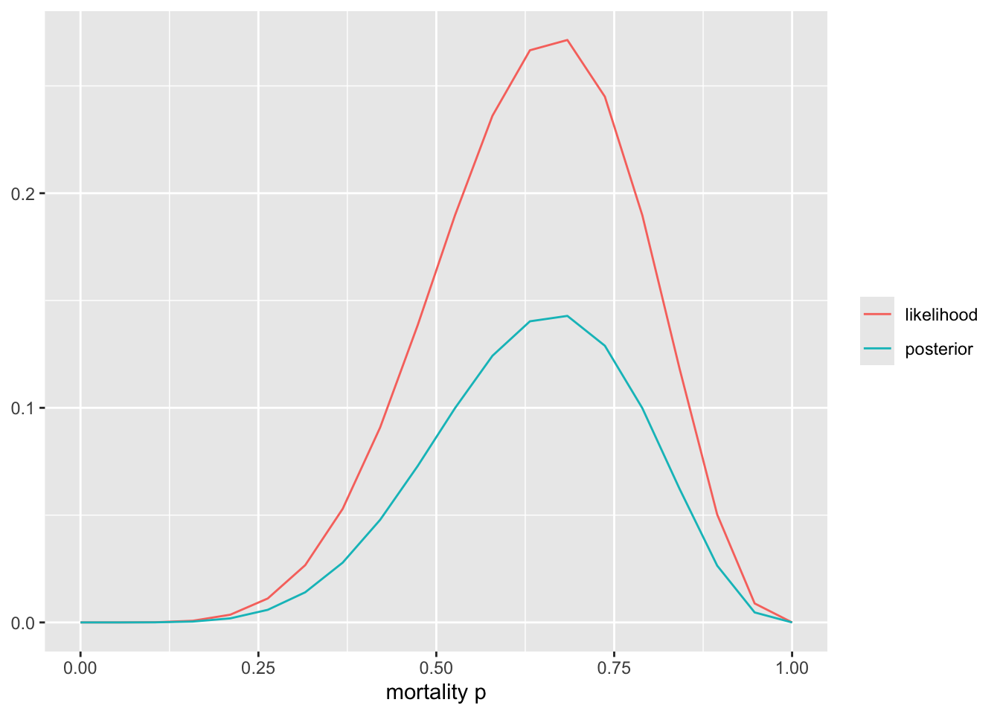
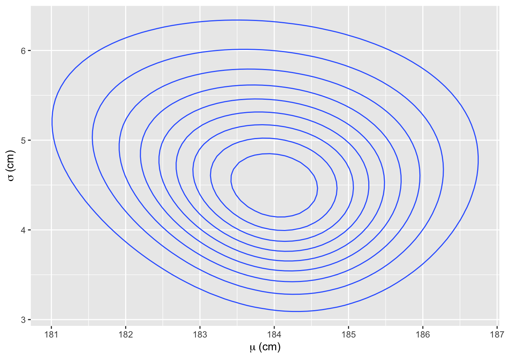

The previous chapter, Chapter 9, left the posterior defined but, beyond the conjugate case, uncomputed: “the posterior is obtained numerically.” This chapter is that computation, done by hand. The method is grid approximation — evaluate prior × likelihood at a grid of parameter values and normalise — which is Bayes’ theorem from Chapter 9 applied directly, with no new ideas, only arithmetic. We use it on two data models, the binomial (one parameter) and the normal (two parameters), and on the way meet the practical apparatus of Bayesian work: the datapoint-by-datapoint update (the iterative updating of Chapter 9 made visible), prior predictive simulation (checking what a prior implies before seeing data), sampling from the posterior, and summarising a posterior by its mean and a credible interval (the 95% highest-density interval, HDI — the interval Chapter 9 left to this chapter). Grid approximation does not scale beyond a few parameters; for that we need Markov chain Monte Carlo (Section 23.2.2), and the regression models of Part V are fitted that way. The point of doing it on a grid first is that nothing is hidden.
The chapter opens with a contrast between the frequentist and Bayesian workflows. The frequentist machinery itself — p values, significance, error rates — is set out in Appendix G; here it serves only to show how differently the two traditions organise an analysis.
10.1 Two workflows
Side by side, Table 10.1 sets out the two traditions’ typical procedures.
Table 10.1: The two workflows.
Stage
Frequentist
Bayesian
Before the data
Pre-register the stopping rule,1 the tests, the variables and their transformations; a power analysis fixes the sample size \(N\)
Choose a data model (the likelihood) and priors; simulate data from them to see what they imply and whether the fitting procedure copes — which doubles as a power analysis
Collecting
Exactly \(N\) observations, analysed together; no peeking unless pre-specified; randomised and blinded where possible
Randomised and blinded where possible; no stopping rule is needed, and the posterior may be updated as the data arrive (Chapter 9)
Fitting
The pre-specified test on the pre-specified variables
Prior × likelihood → posterior; in practice by MCMC rather than by direct calculation (Section 23.2.2)
Checking
Test the assumptions (normality, linearity, constant variance) with further tests on the data and the fitted model
Simulate data from the fitted model and compare with the real data, to see which aspects of the data the model captures and which it misses
Interpreting
Raw effect sizes and p values; one model per effect; in practice, often only the “significant” effects
Posteriors — shrunk estimates (Chapter 23) with credible intervals; all effects together; often several models compared
Iterating
Departures from the protocol are “researcher degrees of freedom” and threaten the error control
Modify the model, refit, repeat until its simulated data resemble the real data; then interpret in scientific context and make counterfactual predictions
The frequentist discipline exists to control long-run error rates. Dichotomising continuous evidence at a significance threshold creates the multiple-testing problem,2 and only pre-registration keeps researcher degrees of freedom from destroying the error control that the tests promise; the price is an analysis that cannot react to results it did not anticipate. It would be a mistake to suppose that these requirements, which come from the need to fix the long-run frequency of type I errors, describe how scientists reason.
The Bayesian analysis needs no stopping rule and no pre-specified test, because there is no significance level to protect and the posterior is a valid summary at any \(N\). What it needs instead is an explicit model, and its checks are checks of that model: simulated data before fitting (the prior predictive check) and after (the posterior predictive check), both met below and made routine in Chapter 23. Both traditions want the same thing — scientific conclusions drawn from fitted models, which have to be interpreted outside the mathematics — and differ in how much of the reasoning they make explicit. One difference of substance: the Bayesian interprets all the effects in a model together, because the principle of total information (desideratum 3.2 of Chapter 8) forbids discarding evidence, whereas the habit of interpreting only significant effects — an historical accident, not a requirement of frequentist theory — discards most of it.
Bayesian inference comes straight from probability theory; frequentist inference is a collection of procedures that require more stringent conditions to work properly.
10.2 The data model
Start with the direction of reasoning that Chapter 7 called modelling the data-generating mechanism: fix the parameter, and ask what data it produces. Suppose the mortality of a disease is 50% and we have 3 patients. How many of them will die? The parameter is fixed at \(p = 0.5\), the sample size at \(N = 3\), and the sample space — the set of possible outcomes — has four members: 0, 1, 2 or 3 deaths. Enumerate every sequence of deaths (d) and survivals (a) that three patients can produce (Table 10.2):
Table 10.2: The eight equally probable futures of three patients when each dies with probability 0.5.
Deaths
Sequences
Count
0
aaa
1
1
daa, ada, aad
3
2
dda, dad, add
3
3
ddd
1
With \(p = 0.5\) every sequence is equally probable, so the \(1 + 3 + 3 + 1 = 8\) futures divide among the four outcomes by counting: \(P(1 \text{ death}) = 3/8\), and so on (Figure 10.1).
Show code
x <-0:3p_count <-tibble(x, y =c(1, 3, 3, 1)) %>%ggplot(aes(x, y)) +geom_point() +geom_line() +labs(x ="number of deaths", y ="number of sequences")p_binom <-tibble(x, y =dbinom(x, 3, 0.5)) %>%ggplot(aes(x, y)) +geom_point() +geom_line() +labs(x ="number of deaths", y ="probability")p_count + p_binom

Figure 10.1: Three patients, mortality 0.5. Left: the number of sequences producing each count of deaths. Right: the same distribution normalised, from the binomial model.
One death and two deaths are equally likely, and each is three times as likely as no deaths or three deaths. The right panel is the binomial distribution of Chapter 7 doing the counting for us: dbinom(x, 3, 0.5) returns, for each possible number of deaths \(x\), its probability given the fixed mortality. For 9 patients and a mortality of 67% the same call gives Figure 10.2.
Show code
x <-0:9tibble(x, y =dbinom(x, 9, 0.67)) %>%ggplot(aes(x, y)) +geom_point() +geom_line() +labs(x ="number of deaths", y ="probability")

Figure 10.2: Nine patients, mortality 0.67: the binomial probability of each number of deaths.
This is the data model, or sampling distribution: with the parameter fixed, it assigns a probability to every dataset that might be observed, and the probabilities sum to one over the sample space. It is not yet a likelihood, and there is no prior and no posterior in it — a prior is a distribution over parameters, and here the parameter is known. What turns the data model into a likelihood is a shift of perspective: hold the data fixed and let the parameter vary.
10.3 Fitting the binomial data model
We observe 6 deaths among 9 patients and want to estimate the true mortality rate.
data: 6 dead out of 9 patients;
parameter to estimate: the mortality rate \(p\);
parameter space — the hypothesis space of Chapter 8 — every real number between 0 and 1.
The same dbinom() serves. It has three arguments — number of events, number of trials, and probability of an event — and before, two of them were fixed and the third was the outcome; now the two data values are fixed and the probability is the unknown. Read this way, dbinom(6, 9, p) as a function of \(p\) is the likelihood: it does not sum to one over \(p\) (Chapter 9), and it is the data’s verdict on each candidate value. We use a flat prior. As the parameter space has infinitely many members, we cheat a little and evaluate prior and likelihood on a grid of 20 evenly spaced values (Figure 10.3).
Show code
# grid: mortality at 20 evenly spaced probabilities from 0 to 1x <-seq(from =0, to =1, length.out =20)prior <-rep(1, 20) # flat priorlikelihood <-dbinom(6, size =9, prob = x) # likelihood at each grid valueposterior <- likelihood * prior /sum(likelihood * prior)tibble(x =rep(x, 2),y =c(likelihood, posterior),curve =rep(c("likelihood", "posterior"), each =20)) %>%ggplot(aes(x, y, colour = curve)) +geom_line() +labs(x ="mortality p", y =NULL, colour =NULL)

Figure 10.3: Six deaths in nine patients on a 20-point grid: the binomial likelihood and the posterior under a flat prior. The posterior is the likelihood rescaled to sum to one.
The posterior sums to one; with a flat prior its shape is that of the likelihood, rescaled.
Now do the same one patient at a time, so that each update uses \(n = 1\) — the iterative updating of Chapter 9 made visible. The first patient died (Figure 10.4).
Figure 10.6: After three patients (died, died, survived): prior in black, posterior in blue.
Now zero mortality and 100 percent mortality are both logically impossible. The posterior peaks at a mortality of \(2/3\) — on our coarse grid, at 0.68 — which is also the raw proportion, as it must be under a flat prior. Updating in a different order, or on all three patients at once, gives the same curve (Exercise 2).
There are an infinite number of possible Gaussian distributions. Some have small means. Others have large means. Some are wide, with a large \(\sigma\). Others are narrow. We want our Bayesian machine to consider every possible distribution, each defined by a combination of \(\mu\) and \(\sigma\), and rank them by posterior plausibility. Posterior plausibility provides a measure of the logical compatibility of each possible distribution with the data and model. … The parameters to be estimated are both \(\mu\) and \(\sigma\), so we need a prior \(Pr(\mu , \sigma)\), the joint prior probability for all parameters. In most cases, priors are specified independently for each parameter, which amounts to assuming \(Pr(\mu, \sigma) = Pr(\mu) Pr(\sigma)\).
How does one make a US president? Let us start by generating some heights of presidential candidates. We assume that human growth is a deterministic process that depends on a complex mix of many genetic and environmental factors. But we really do not understand this process well enough to directly use it to generate prospective heights of future presidents. We think that human height is approximately normally distributed (conditional on sex, age, etc.), so we could model presidential heights as a normal distribution where each possible height is given a probability of occurring. Now, we could generate new heights from this stochastic model proportionally to these probabilities. But before we do this, we have to fix the shape of the normal distribution so that we know the relevant probabilities. This can be done by fixing the values of two parameters of the normal distribution, \(\mu\) and \(\sigma\). Luckily we have data on the heights of the last 12 presidents (approximate, from public sources):
As the parameter \(\mu\) is identical to the expected value, i.e. the mean of the normal distribution and \(\sigma\) to standard deviation (SD), we can simply calculate those and then use these numbers to generate new heights.
Data mean is:
Show code
(Mean <-mean(heights$value))
[1] 184.5833
and SD is:
Show code
(SD <-sd(heights$value))
[1] 3.964807
Predict 4000 new heights from this fixed distribution and take their standard deviation:
Show code
set.seed(1)rnorm(4000, Mean, SD) %>%sd()
[1] 4.10711
This procedure is not ideal, though, as it does not take into account the fact that our estimates of \(\mu\) and \(\sigma\), calculated from limited data, are not precisely true for the full population of US presidents, including the future ones. So on top of the randomness in predicting new presidents that comes from our imperfect knowledge of the mechanisms that generate human heights we must model the uncertainty that comes from imperfect data. How can we do this? When modelling this second-order epistemic uncertainty we will end up not with point estimates of \(\mu\) and \(\sigma\), but probability distributions for \(\mu\) and \(\sigma\) values. This way we are not predicting new heights from a single fixed normal distribution, but rather from many different distributions, where each is parametrised by a plausible combination of \(\mu\) and \(\sigma\) values (each of these combinations is supported by the data and by our prior knowledge of plausible presidential heights).
We return to this comparison once the model has been fitted (the MCMC section below).
First we fit this model the old-fashioned way, using Bayes’ theorem with grid approximation.
Basic Bayesian inference goes like this:
What is the parameter space of the true mean height? Every real number, from \(-\infty\) to \(\infty\) — silly, but convenient if we want to use the normal data model.
How well does each possible value of the mean account for the data? The answer is the likelihood, which depends on the sample and on the data model chosen to represent it. With \(\sigma\) fixed at the sample SD, the likelihood as a function of \(\mu\) is proportional to a normal curve centred on the sample mean with standard deviation \(\text{SD}/\sqrt{N}\) — the standard error of the mean (SEM).
Next comes quantifying prior beliefs about the mean height, independent of the sample. Our prior for the mean is also a normal distribution, with \(\mu = 175.4\) (the mean height of US males) and sd \(= 5\) (picked so that a mean height of 181 cm for presidents is comfortably within range). The prior for \(\sigma\) is normal too, with \(\mu = 5.2\) (the SD of heights in the general US male population) and sd \(= 1\), restricted to positive values, so that true SDs between about 3 and 7 cm are plausible. This is a rather informative prior.
Likelihood models data as a probability distribution.
Likelihood does not have to be normal.
Prior is your belief about the parameter value, modelled as a probability distribution.
Prior does not have to be normal.
Likelihood and prior(s) do not have to be represented by the same distribution.
When prior and likelihood are both unimodal and broadly agree, the posterior is narrower than either — for normal distributions the precisions add — because it pools their information. This is the usual case, not a law: a prior that conflicts with the likelihood can produce a displaced or bimodal posterior, and a set of priors can even widen under conditioning (Appendix H).
Next is the grid method for a posterior in two dimensions. Instead of multiplying likelihoods, we will add log-likelihoods (mathematically the same thing, numerically safer).
The model is:
\[height_i \sim normal(\mu, \sigma)\]
\[\mu \sim normal(175.4, 5)\]
\[\sigma \sim normal(5.2, 1)\]
where the first line is the data model — the likelihood, once the data are in — containing two parameters, and the next two lines are the priors for each parameter. The index \(i\) runs over heights, which means the model assumes each individual height comes from the same normal distribution.
10.4.1 Prior predictive simulation
A prior on a parameter is hard to judge directly; what can be judged is the data it implies. Draw \(\mu\) and \(\sigma\) from the priors, then draw heights from the data model with those values: the result is the distribution of heights the model considers plausible before it has seen any data (Figure 10.7). Chapter 23 makes this check a standard step of every analysis.
Figure 10.7: A prior predictive check: heights simulated from the informative priors (black) and from vague priors (red), before any data.
Two prior combinations are compared: the informative one above (black) and a vague one, \(\mu \sim \text{Normal}(180, 50)\), \(\sigma \sim \text{Uniform}(0, 100)\) (red), which carries no biological information beyond a preference for positive values below a few metres — it treats a mean height of four metres as possible. Vague priors are common because they demand little of the analyst and ease MCMC fitting; the check shows what they cost, and why a strong, scientifically informed prior is preferable whenever the information exists.
10.4.2 Calculating the 2D posterior
The posterior is a joint distribution over all parameters in the model. If we have 2 parameters, then we have a 2D posterior. If we have 200 parameters, then we have 200D posterior. We can always collapse the posterior to a desired 1D view for inspection (see below).
Show code
# d_grid holds all 10 000 combinations of mu and sigma values on the grid;# crossing() expands the two sequences to every pair.n <-100d_grid <-crossing(mu =seq(from =180, to =190, length.out = n),sigma =seq(from =1, to =8, length.out = n))# For one (mu, sigma) pair: the log-likelihood of all 12 heights.# sum() on the log scale is prod() on the linear scale.grid_function <-function(mu, sigma) {dnorm(heights$value, mean = mu, sd = sigma, log =TRUE) %>%sum()}d_grid <- d_grid %>%mutate(log_likelihood =map2_dbl(mu, sigma, grid_function), # row by rowprior_mu =dnorm(mu, mean =175.4, sd =5, log =TRUE),prior_sigma =dnorm(sigma, mean =5.2, sd =1, log =TRUE),product = log_likelihood + prior_mu + prior_sigma, # log posterior, unnormalisedprobability =exp(product -max(product))) # back to the probability scale, peak = 1d_grid %>%ggplot(aes(x = mu, y = sigma, z = probability)) +geom_contour() +labs(x =expression(mu ~"(cm)"), y =expression(sigma ~"(cm)"))

Figure 10.8: The joint posterior of the mean and SD of presidential heights on a 100 × 100 grid, drawn as contours of posterior probability.
This two-dimensional posterior is drawn as the contours of a surface whose height is posterior probability.5 The peak lies inside the innermost contour. The surface is not a bivariate normal: \(\sigma\) enters the likelihood asymmetrically, so the posterior is skewed in \(\sigma\), and the spread of \(\mu\) widens as \(\sigma\) grows.
10.4.3 Sampling from the posterior: marginals for μ and σ
Rows of the grid are sampled at random with probability proportional to their posterior probability, so that combinations with higher posterior probability appear more often. From these posterior samples of \((\mu, \sigma)\) the marginal posterior of each parameter is read off by ignoring the other (Figure 10.9):
Figure 10.9: Marginal posteriors of the mean and SD of presidential heights, from 10 000 rows sampled from the grid in proportion to their posterior probability.
10.4.4 Summarising the posterior: point and interval
The posterior samples are summarised by a point and an interval. The point is the posterior mean (or median, or mode). For the interval there are two conventions. The equal-tailed interval cuts 2.5% of the mass from each end. The highest-density interval (HDI) is the narrowest interval holding 95% of the mass, so that every value inside it is more probable than any value outside. For a symmetric posterior they coincide; for a skewed one the HDI shifts towards the mode. Both are credible intervals: unlike a confidence interval, either means what students expect — the parameter lies inside with 95% probability, given the model and the data. Table 10.3 gives both for the two parameters.
Table 10.3: Posterior summaries from the grid samples: mean, 95% equal-tailed interval, and 95% highest-density interval (cm).
parameter
mean
eti_lower
eti_upper
hdi_lower
hdi_upper
mu
183.95
181.21
186.57
181.31
186.57
sigma
4.75
3.40
6.37
3.33
6.30
For \(\mu\), whose posterior is close to symmetric, the midpoints of the two intervals differ by 0.05 cm; for \(\sigma\) the midpoint of the HDI lies 0.07 cm below that of the equal-tailed interval, following the skew visible in Figure 10.9.
10.4.5 Triplot for μ
A triplot overlays the prior, the likelihood and the posterior of one parameter on a common axis, so that the contribution of each can be seen (Figure 10.10). The likelihood curve for \(\mu\) is the normal centred on the sample mean with standard deviation SEM, as in the recipe above.
Figure 10.10: Triplot for the mean presidential height: prior, likelihood (normal at the sample mean with SD = SEM) and posterior.
Even with only 12 data points the prior is so much wider than the likelihood that it has minimal influence on the posterior.
10.4.6 The same posterior by MCMC
Grid approximation is exact up to the grid’s resolution, and hopeless beyond a handful of parameters: 100 points per parameter is \(100^k\) evaluations. The general method is Markov chain Monte Carlo (MCMC), which produces the same kind of table of posterior samples without visiting every combination — a sampler wanders through parameter space, spending time in each region in proportion to its posterior probability. Section 23.2.2 explains how, and how to check that it worked; Appendix C sets out the brms interface used throughout the book. Here it is enough to fit the same model, with the same priors, and compare (Table 10.4).
Table 10.4: Posterior mean and 95% HDI for the two parameters (cm): grid approximation against MCMC with the same priors.
parameter
method
mean
lower
upper
mu
MCMC (brms)
183.96
181.30
186.61
mu
grid
183.95
181.31
186.57
sigma
MCMC (brms)
4.75
3.37
6.26
sigma
grid
4.75
3.33
6.30
The two agree to within the resolution of the grid. Now the president problem can be finished. Predicting heights from the posterior means that each simulated president is drawn from a normal distribution whose \(\mu\) and \(\sigma\) are themselves drawn from the posterior — one row of the samples table per president — so the prediction carries both the biological spread and our uncertainty about the parameters:
The standard deviation of predicted heights is larger by 0.81 cm when the parameter uncertainty is included. The prediction pools the two kinds of uncertainty; they cannot be separated again afterwards.
10.4.7 Some things to notice
As the priors are true probabilities that sum to one, and the likelihoods are not, we can run our models on either priors and data, or on priors alone, but never on data alone. Running a model on priors alone can be a good idea, if you want to know, how much your data influences the model fit. When you have little data and strong priors, this is the thing to do.
Each fitted model with k parameters gives you a k-dimensional posterior (this is slightly more complicated with multi-level models), which we flatten into k side-by-side variables in the posterior samples table. This means that we have to treat each row of this table as a single unit, when we use them in further calculations. In each row there is one plausible combination of k parameter values – if you mix the values between rows, this might no longer hold.6
As we fitted the full model (both mean and sd), we can generate in silico data from it, using the full posterior samples, and compare these generated data with the actual data that was used to fit the model. This comparison is a posterior predictive check, and it is the quickest way to see how well the mathematical model recaptures the data-generating mechanism; Chapter 23 makes it routine. Any fully specified probability model is generative in this sense, frequentist or Bayesian — a frequentist normal model also estimates \(\sigma\) — but the Bayesian check draws each simulated dataset from a different posterior sample of the parameters, so the simulations carry the estimation uncertainty as well as the sampling variation.
The more data you have, the narrower the likelihood; the more scientific information you put into the prior, the narrower the prior (usually, but not always). Whichever of the two is narrower, will influence the posterior more. When the two broadly agree, the posterior is narrower than either. A lot of data swamps the prior, making it unimportant in respect of the posterior. Conversely, with a small sample the prior can have a major influence on the posterior.
In Bayesian estimation, posterior is everything. It contains all of the information about the estimates that is contained in the fitted model. There is nothing in the model about the parameter values that is not covered in the posterior. Every fitted model gives you a posterior for every parameter in the model. This is it. All you have to do, is to study those posteriors, and to make calculations with them to get new estimates. For example, Chapter 21 obtains the estimate for a treated group’s mean by adding, row by row, the posterior samples of the control mean and of the effect. These calculations are done at the level of posterior samples, the idea being that you do not want to lose information about estimation uncertainty. Also, with many likelihoods you can calculate straight from the posterior either the mean or the median (and often the mode), all with appropriate credible intervals. This is not something you can easily do in frequentist statistics.
10.5 Bridge to regression
Everything in this chapter generalises. A regression model is a data model whose parameter — the mean of the likelihood — is itself a function of predictors: \(\mu_i = \alpha + \beta_1 x_i\) instead of a single \(\mu\). The president-height model above is already the simplest regression, an intercept-only normal model (value ~ 1); adding predictors on the right-hand side is the whole of Part V. The machinery does not change — prior × likelihood, normalised, summarised by samples and a credible interval — only the number of parameters grows, and with it the need to replace the grid with MCMC (Section 23.2.2). Chapter 21 takes up linear regression, Chapter 25 the generalised linear models whose exponential-family likelihoods were previewed in Chapter 7, and Chapter 29 returns the posterior samples to causal use, turning a fitted model into a distribution of counterfactual contrasts.
The step from grid to sampler changes the computation, not the object. Where the grid evaluated the posterior at every combination and then sampled rows in proportion to their probability, MCMC generates the rows directly, and the exhaustive evaluation is never done. Everything downstream — marginals, HDIs, row-wise derived quantities, posterior predictive checks — operates on the resulting table of draws exactly as it did here. The price is that a sampler can fail quietly where a grid cannot, which is why Section 23.2.2 pairs the method with its checks: R-hat, effective sample size, divergences.
10.6 Key points
Two workflows. The frequentist analysis is organised to control long-run error rates — pre-registration, fixed \(N\), one pre-specified test; the Bayesian analysis is organised around an explicit model that is checked by simulation before and after fitting and revised in cycles (Chapter 23).
Grid approximation is Bayes’ theorem applied directly: evaluate prior × likelihood over a grid of parameter values and normalise so the posterior sums to one. It makes every step of Chapter 9 visible.
The data model (sampling distribution) fixes the parameter and assigns probabilities to datasets; read with the data fixed and the parameter varying, it is the likelihood, which need not be normal. The prior models data-independent belief and need not match the likelihood’s form. When the two broadly agree the posterior is narrower than either; this is the usual case, not a law.
Updating one datapoint at a time gives the same posterior as updating all at once (exchangeability, Chapter 9): yesterday’s posterior is today’s prior.
Prior predictive simulation draws parameters from the prior and then data from the model, revealing what a prior implies before the data — a weakly informative prior can imply absurd values (4-metre presidents).
The posterior over \(k\) parameters is \(k\)-dimensional; collapse it to one parameter by sampling and reading off a marginal. Treat each posterior sample (a full row of parameter values) as a unit when computing derived quantities.
Summarise a posterior by a point (mean, median, or mode) and a credible interval — equal-tailed, or the 95% HDI, the narrowest interval holding 95% of the posterior mass. Unlike a confidence interval, either means what students expect: the parameter lies in it with 95% probability, given the model.
MCMC replaces the grid beyond a few parameters, producing the same table of posterior draws without exhaustive evaluation; grid and sampler agree on the president model, and Section 23.2.2 supplies the checks a sampler needs.
The posterior is everything the fitted model says about the parameters; further estimates are calculations on posterior samples. Because Bayesian models are generative, the same samples support posterior predictive checks.
More data narrows the likelihood; more informative priors narrow the prior; the narrower one dominates, and a large sample swamps the prior.
10.7 Exercises
Grid on the cohort. Source R/simulate_cohort.R, take the untreated patients, and estimate the stroke risk by grid approximation: a grid of 200 probabilities, a flat prior, and a binomial likelihood with the observed stroke count and number of patients. Plot the posterior, report its mean and 95% HDI, and compare the mean with the raw proportion. Then replace the flat prior with a \(\text{Beta}(2,2)\)-shaped prior evaluated on the grid and describe how the posterior moves.
Order does not matter. Re-run the datapoint-by-datapoint update of the three patients (died, died, survived) in a different order (e.g. survived, died, died). Confirm the final posterior is identical, and explain which property from Chapter 9 guarantees this.
A reckless prior. In the prior predictive chunk, replace the informative height prior with \(\mu \sim \text{Normal}(180, 50)\), \(\sigma \sim \text{Uniform}(0,100)\) and plot the implied heights. What fraction of simulated mean heights are negative or above 3 metres? Use this to argue, in two sentences, for scientifically informed priors.
HDI versus equal-tailed interval. From the posterior samples of \(\sigma\), compute both the 95% HDI and the 2.5%–97.5% quantile interval, as Table 10.3 does, and note how far they differ. Then simulate a strongly skewed posterior — say 10 000 draws from a \(\text{Gamma}(2, 1)\) — for which they differ substantially, and say which interval you would report and why.
The posterior is everything. Using the posterior samples of \(\mu\) and \(\sigma\), estimate the probability that a newly drawn president exceeds 190 cm (draw one height per posterior sample with rnorm and take the proportion). Explain why this calculation must be done row-wise on the samples rather than by plugging in the posterior means.
Why the grid runs out. Re-run the binomial grid with 20, 200, and 2000 points and note when the posterior summaries stop changing. Then explain why the same brute-force grid is infeasible for a model with 30 parameters, and what replaces it (Section 23.2.2).
In frequentist statistics you need stopping rules (a predetermined sample size), so that you do not declare a “significant effect” the first time a randomly fluctuating p value dips below the significance level. Bayesian inference has no significance level and no dichotomisation of continuous evidence, so stopping rules would be meaningless.↩︎
While multiple testing, narrowly understood, is not a problem for the Bayesian, false alarms are. The currently favoured Bayesian mitigation of false alarms is multilevel modelling (Chapter 28).↩︎
McElreath R, Statistical Rethinking: A Bayesian Course with Examples in R and Stan, 2nd ed., Boca Raton: CRC Press, 2020 (chapter 4).↩︎
This is Bayesian method in a nutshell: at each parameter value (x) we multiply the likelihood (y_lik) with the prior (y_pr), thus combining our prior knowledge with the data and the data model. Knowledge (prior and data) in – knowledge (posterior) out.↩︎
geom_contour() visualises 3D surfaces in 2D. To specify a valid surface, the data must contain x, y, and z coordinates, and each unique combination of x and y can appear once.↩︎
With the normal likelihood the posterior correlation between \(\mu\) and \(\sigma\) is close to zero, so mixing rows would do little harm here; but uncorrelated is not independent — the spread of \(\mu\) grows with \(\sigma\) — and with most other likelihoods the parameters are correlated outright.↩︎